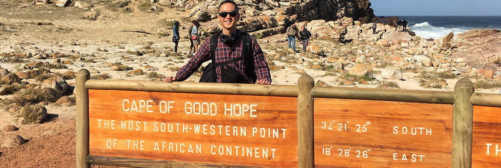
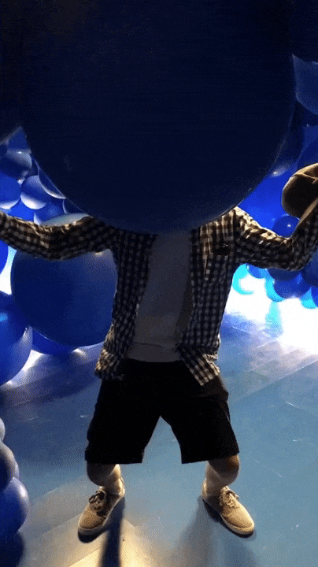

Hi, my name is William.
And I like to make stuff.

about me
I am an empathetic individual who is not only interested in crafting compelling and fun stories, but also in designing intuitive, equitable and user-centered products, systems and services.

quick facts
- MPP/MSI dual degree candidate at the University of Michigan Ford School of Public Policy and School of Information
- Specializing in user experience (UX) research, product design and content strategy
- Spent a summer volunteering at an NGO in Cape Town, South Africa and consulted on communications strategy and design
- Former legislative staffer and acting communications director at the California State Assembly
- Facebook 2018 Content Strategy Fellow
- Previously wrote for my high school and college newspapers
- Currently obsessing over the Nintendo Switch
- I LOVE coffee